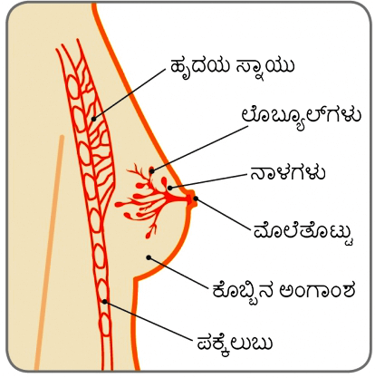
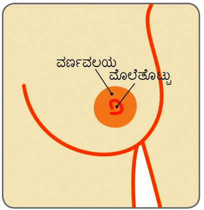

ಬೆನೈನ್ ಸ್ತನ ಆರೋಗ್ಯ ಸಮಸ್ಯೆಗಳು
ಮೊಲೆತೊಟ್ಟಿಗೆ ಸಂಬಂಧಿಸಿದ ಸಮಸ್ಯೆಗಳು
ಪಾಯಲ್ (ಹೆಸರು ಬದಲಾಯಿಸಲಾಗಿದೆ) 45 ವರ್ಷದವರಾಗಿದ್ದು, ಪದೇ ಪದೇ ಎಡ ಮೊಲೆತೊಟ್ಟಿನಲ್ಲಿ ಸ್ರವಿಸುವಿಕೆ ಮತ್ತು ಮೊಲೆತೊಟ್ಟಿನ ಸುತ್ತಲೂ ಸೋಂಕನ್ನು 6 ತಿಂಗಳಿನಿಂದ ಹೊಂದಿದ್ದಾರೆ.
ಸ್ತನ

ಮೊಲೆತೊಟ್ಟು

ಡಕ್ಟ್ ಎಕ್ಟೇಸಿಯಾ ಎಂದರೇನು?
ಸ್ತನಗಳಲ್ಲಿ ಲೊಬ್ಯೂಲ್ಗಳು (ಹಾಲು ಸ್ರವಿಸುವ ಗ್ರಂಥಿಗಳು) ಮತ್ತು ನಾಳಗಳಿಂದ (ಹಾಲನ್ನು ಮೊಲೆತೊಟ್ಟಿನತ್ತ ಒಯ್ಯುವ ಕೊಳವೆಗಳು) ಉಂಟಾಗಿದ್ದು, ಇವುಗಳ ಸುತ್ತ ಕೊಬ್ಬಿನ ಅಂಗಾಂಶ ಹಾಗೂ ಸಹಾಯಕ ಅಂಗಾಂಶ ಇರುತ್ತದೆ. ಸ್ತ್ರೀಯರ ಋತುಚಕ್ರ ನಿಲ್ಲುವ ವಯಸ್ಸಿಗೆ ಬಂದಂತೆ ಸ್ತನಗಳ ಮೊಲೆತೊಟ್ಟಿನ ಹಿಂದಿನ ನಾಳಗಳು ಗಿಡ್ಡವಾಗುತ್ತವೆ ಮತ್ತು ಅಗಲವಾಗುತ್ತವೆ. ಇದನ್ನೇ ಡಕ್ಟ್ ಎಕ್ಟೇಸಿಯಾ ಎನ್ನುತ್ತಾರೆ.
ಇದು ಸಹಜ ಸ್ತನ ಬದಲಾವಣೆ ಹಾಗೂ ಚಿಂತಿಸುವ ಅಗತ್ಯವಿಲ್ಲ. ಕೆಲವೊಮ್ಮೆ ಈ ಅಗಲವಾದ ನಾಳಗಳಲ್ಲಿ ಸ್ರವಿಸುವಿಕೆ ಶೇಖರವಾಗಿ ಅವುಗಳ ಆವರಣ ಕೆರಳಿಕೆಗೆ ಒಳಗಾಗಬಹುದು. ಅಷ್ಟೇ ಅಲ್ಲದೇ ಈ ನಾಳದ ಆವರಣಗಳಲ್ಲಿ ಹುಣ್ಣು ಉಂಟಾಗಿ ನೋವು ಉಂಟಾಗಬಹುದು, ಇದು ಸಾಮಾನ್ಯವಾದ ಸ್ಥಿತಿಯಲ್ಲ.
ಡಕ್ಟ್ ಎಕ್ಟೇಸಿಯಾವನ್ನು ಹೇಗೆ ಪತ್ತೆ ಮಾಡಲಾಗುತ್ತದೆ?
ತಜ್ಞವೈದ್ಯರ ಸಲಹೆಯು ಅತ್ಯಗತ್ಯ ಮತ್ತು ಮೂರು ಬೇರೆ ಬೇರೆ ಪರೀಕ್ಷೆಗಳಿಗೆ ಒಳಗಾಗುವುದು ಮುಖ್ಯ, ಹೆಚ್ಚಿನ ಸಂದರ್ಭಗಳಲ್ಲಿ ತ್ರಿವಳಿ ವಿಶ್ಲೇಷಣೆಯು ಅಗತ್ಯವಿರುತ್ತದೆ, ಇದರಿಂದ ನಿಖರ ರೋಗಪತ್ತೆಯನ್ನು ಮಾಡಬಹುದು. ಇವುಗಳೆಂದರೆ ವೈದ್ಯಕೀಯ ಸ್ತನ ಪರೀಕ್ಷೆ, ಮಮ್ಮೋಗ್ರಾಂ (ಸ್ತನದ ಎಕ್ಸ್-ರೆ) ಮತ್ತು ಅಲ್ಟ್ರಾಸೌಂಡ್ ಸ್ಕ್ಯಾನ್ ( ಇದು ಅತ್ಯಧಿಕ ಆವರ್ತನೆಯ ಶಬ್ದ ತರಂಗಗಳನ್ನು ಬಳಸಿ ಚಿತ್ರವನ್ನು ರೂಪಿಸುವುದು).
ಒಂದು ಮೊಲೆತೊಟ್ಟಿನಿಂದ ಸ್ರವಿಸುವಿಕೆ ಇದ್ದರೆ, ವಿಶೇಷವಾಗಿ ರಕ್ತದಕಲೆಯಿದ್ದಲ್ಲಿ ಅವನ್ನೂ ಕೂಡ ರೋಗಪತ್ತೆಯನ್ನು ದೃಢೀಕರಿಸುವುದಕ್ಕಾಗಿ ಪರೀಕ್ಷಿಸಬೇಕು.
ಡಕ್ಟ್ ಎಕ್ಟೇಸಿಯಾವನ್ನು ಹೇಗೆ ಪತ್ತೆ ನಿರ್ವಹಿಸಲಾಗುತ್ತದೆ?
ಹೆಚ್ಚಿನ ಸಂದರ್ಭಗಳಲ್ಲಿ ಚಿಕಿತ್ಸೆ ಅಗತ್ಯವಿರುವುದಿಲ್ಲ ಏಕೆಂದರೆ ಇದು ವಯಸ್ಸಾಗುವಿಕೆಯ ಲಕ್ಷಣವಾಗಿದೆ ಮತ್ತು ತನ್ನಿಂತಾನೆ ಉಪಶಮನವಾಗುತ್ತದೆ. ಆದರೆ ಯಾವುದೇ ಹೊಸ ಲಕ್ಷಣಗಳು ಕಂಡುಬಂದಲ್ಲಿ ತಜ್ಞವೈದ್ಯರನ್ನು ಭೇಟಿಯಾಗುವುದು ಒಳ್ಳೆಯದು. ಆದರೆ ಮೊಲೆತೊಟ್ಟಿನಿಂದ ತೊಂದರೆ ನೀಡುವ ಸ್ರವಿಸುವಿಕೆ ಹಾಗೆಯೇ ಉಳಿದಲ್ಲಿ ಪರಿಣಾಮಕ್ಕೆ ಒಳಗಾದ ನಾಳ ಅಥವಾ ನಾಳಗಳನ್ನು ತೆಗೆಯಲು ಶಸ್ತ್ರಚಿಕಿತ್ಸೆ ಅಗತ್ಯವಾಗಬಹುದು. ಶಸ್ತ್ರಚಿಕಿತ್ಸೆಯನ್ನುಸಾಮಾನ್ಯವಾಗಿ ಸಾಮಾನ್ಯ ಅರಿವಳಿಕೆ ನೀಡಿ ನಡೆಸಲಾಗುತ್ತದೆ ಮತ್ತು ರೋಗಿಯು ಹಗಲಿನ ವೇಳೆ ಅಥವಾ ರಾತ್ರಿಯಿಡೀ ಆಸ್ಪತ್ರೆಯಲ್ಲಿ ಇರುವುದು ಅಗತ್ಯವಾಗುತ್ತದೆ.
ಪೆರಿಡಕ್ಟಲ್ ಮಸ್ಟೈಟಿಸ್ ಎಂದರೇನು?
ಪೆರಿಡಕ್ಟಲ್ ಮಸ್ಟೈಟಿಸ್ ಎನ್ನುವುದು ಹಾನಿಕಾರಕವಲ್ಲದ ಸ್ತನದ ಸ್ಥಿತಿ. ಕೆಲವೊಮ್ಮೆ ಮೊಲೆತೊಟ್ಟಿನ ಅಡಿಯಲ್ಲಿನ ನಾಳಗಳು ಉರಿಯೂತಕ್ಕೆ ಒಳಗಾಗುತ್ತವೆ ಮತ್ತು ಸೋಂಕಿಗೆ ಒಳಗಾಗುತ್ತವೆ. ಇದೇ ಪೆರಿಡಕ್ಟಲ್ ಮಸ್ಟೈಟಿಸ್. ಇದು ಎಲ್ಲ ವಯಸ್ಸಿನ ಜನರನ್ನು ಬಾಧಿಸುತ್ತಾದರೂ ತರುಣಿಯರಲ್ಲಿ ಹೆಚ್ಚು ಸಾಮಾನ್ಯವಾಗಿದೆ. ಸ್ತ್ರೀಯರಲ್ಲಿ ಇದು ಸಾಮಾನ್ಯವಾಗಿದ್ದರೂ, ಪುರುಷರೂ ಕೂಡ ಪೆರಿಡಕ್ಟಲ್ ಮಸ್ಟೈಟಿಸ್ಗೆ ತುತ್ತಾಗುವ ಸಾಧ್ಯತೆಯಿದೆ, ಆದರೆ ಇದು ಬಹಳ ಅಪರೂಪ.
ಪೆರಿಡಕ್ಟಲ್ ಮಸ್ಟೈಟಿಸ್ ಸ್ತನವನ್ನು ಅತಿಮೃದುವಾಗಿರುವಂತೆ ಮತ್ತು ಸ್ಪರ್ಶಿಸುವುದಕ್ಕೆ ಬಿಸಿಯಾಗಿರುವಂತೆ ಮಾಡಬಹುದು ಮತ್ತು ಚರ್ಮವು ಕೆಂಪಾಗಿ ಕಾಣಬಹುದು. ಇದು ಮೊಲೆತೊಟ್ಟಿನಿಂದ ಸ್ರವಿಸುವಿಕೆಯನ್ನು ಉಂಟುಮಾಡಬಹುದು, ಈ ಸ್ರವಿಸುವಿಕೆಯು ರಕ್ತವನ್ನು ಹೊಂದಿರಬಹುದು ಅಥವಾ ಇಲ್ಲದಿರಬಹುದು.
ಕೆಲವೊಮ್ಮೆ ಮೊಲೆತೊಟ್ಟಿನ ಹಿಂದೆ ಗಂಟು ಇರುವಂತೆ ಅನ್ನಿಸಬಹುದು ಅಥವಾ ಮೊಲೆತೊಟ್ಟಿನ ಹಿಂದಿನ ಸ್ತನದ ಅಂಗಾಂಶಕ್ಕೆ ಕಲೆ ಉಂಟಾಗಬಹುದು. ಇದು ಸ್ತನವನ್ನು ಒಳಕ್ಕೆ ಎಳೆಯಬಹುದು, ಆದ್ದರಿಂದ ಇದು ಹಿಮ್ಮುಖವಾಗುತ್ತದೆ. ಕೆಲವೊಮ್ಮೆ ಕೀವಿನ ಬೊಕ್ಕೆ (ಕೀವು ಶೇಖರಣೆಯಾಗುವುದು) ಅಥವಾ ಪಿಸ್ತುಲಾ (ಚರ್ಮ ಮತ್ತು ನಾಳಗಳ ನಡುವೆ ಉಂಟಾಗುವ ನಾಳ) ಉಂಟಾಗಬಹುದು. ಧೂಮಪಾನ ಮಾಡುವ ವ್ಯಕ್ತಿಗಳು ಪೆರಿಡಕ್ಟಲ್ ಮಸ್ಟೈಟಿಸ್ನಿಂದ ತೊಂದರೆಗೀಡಾಗುವ ಸಾಧ್ಯತೆ ಹೆಚ್ಚು, ಏಕೆಂದರೆ ಸಿಗರೇಟ್ ಹೊಗೆಯಲ್ಲಿರುವ ಪದಾರ್ಥಗಳು ಮೊಲೆತೊಟ್ಟಿನ ಹಿಂಬದಿಯ ನಾಳಗಳಿಗೆ ಹಾನಿ ಮಾಡುತ್ತವೆ. ಚಿಕಿತ್ಸೆಯ ನಂತರವೂ ಧೂಮಪಾನವು ಉಪಶಮನವಾಗುವ ಪ್ರಕ್ರಿಯೆಯನ್ನು ನಿಧಾನಗೊಳಿಸಬಹುದು.
ಪೆರಿಡಕ್ಟಲ್ ಮಸ್ಟೈಟಿಸ್ ಅನ್ನು ಹೇಗೆ ಪತ್ತೆ ಮಾಡಲಾಗುತ್ತದೆ?
ವೈದ್ಯಕೀಯ ಸ್ತನ ಪರೀಕ್ಷೆ ಮತ್ತು ಸ್ತನದ ಅಲ್ಟ್ರಾಸೌಂಡ್ಗಳನ್ನು ಮಾಡುವುದು ಅಗತ್ಯವಿದೆ. ಸ್ತನವು ಬಹಳ ಮೃದುವಾಗಿರುವುದರಿಂದ, ಮಮ್ಮೋಗ್ರಾಂ ಮಾಡುವುದು ಅಹಿತಕರವಾಗಬಹುದುರವಾಗಬಹುದು ಮತ್ತು ಸೋಂಕು ನಿವಾರಣೆ ಆಗುವವರೆಗೂ ಇದನ್ನು ಮಾಡಲಾಗುವುದಿಲ್ಲ. ಮೊಲೆತೊಟ್ಟಿನಿಂದ ಸ್ರವಿಸುವಿಕೆ ಇದ್ದಲ್ಲಿ, ಸ್ಯಾಂಪಲ್ ಅನ್ನು ರೋಗಪತ್ತೆಯನ್ನು ದೃಢೀಕರಿಸಲು ಸೂಕ್ಷ್ಮದರ್ಶಕದಲ್ಲಿ ನೋಡುವುದಕ್ಕಾಗಿ ಪ್ರಯೋಗಾಲಯಕ್ಕೆ ಕಳುಹಿಸಬಹುದು (ರಕ್ತಯುಕ್ತವಾದ ಸ್ರವಿಸುವಿಕೆ ಇದ್ದಲ್ಲಿ ಈ ಸಾಧ್ಯತೆ ಹೆಚ್ಚು).
ಪೆರಿಡಕ್ಟಲ್ ಮಸ್ಟೈಟಿಸ್ ಗೆ ಚಿಕಿತ್ಸೆಯೇನು?
ಹೆಚ್ಚಿನ ಸಂದರ್ಭಗಳಲ್ಲಿ, ಆ್ಯಂಟಿಬಯಾಟಿಕ್ಗಳು ಸೋಂಕು ಕಡಿಮೆ ಮಾಡಲು ಸಹಾಯ ಮಾಡುತ್ತವೆ. ನೋವಿನ ಶಮನಕ್ಕಾಗಿ ಪ್ಯಾರಾಸೆಟಮಾಲ್ ಅನ್ನು ಪ್ರಿಸ್ಕ್ರೈಬ್ ಮಾಡಬಹುದು. ಒಂದು ವೇಳೆ ಕೀವಿನ ಬೊಕ್ಕೆ ಉಂಟಾದಲ್ಲಿ, ಅಲ್ಟ್ರಾಸೌಂಡ್ ನಿರ್ದೇಶಿತ ಕೀವು ತೆಗೆಯುವಿಕೆ (ಆಸ್ಪಿರೇಶನ್) ಮೊದಲ ಆಯ್ಕೆಯ ಚಿಕಿತ್ಸೆಯಾಗಿದೆ. ಇದನ್ನು ಕೀವನ್ನು ಸಂಪೂರ್ಣವಾಗಿ ತೆಗೆಯುವವರೆಗೂ ಪುನರಾವರ್ತಿಸುವುದು ಅಗತ್ಯವಾಗಬಹುದು. ಒಂದು ವೇಳೆ ಪುನರಾವರ್ತಿತ ಆಸ್ಪಿರೇಶನ್ ಉಪಯೋಗ ಆಗದೇ ಇದ್ದಲ್ಲಿ,ಸ್ವಲ್ಪ ಪ್ರಮಾಣದ ಸಾಮಾನ್ಯ ಅರಿವಳಿಕೆಯ ಮೂಲಕ ಕೀವು ಸುಲಭವಾಗಿ ಹೊರಹೋಗುವಂತೆ ರಂಧ್ರವೊಂದನ್ನು ಚರ್ಮಕ್ಕೆ ಮಾಡಲಾಗುತ್ತದೆ.
ಒಂದುವೇಳೆ ಪೆರಿಡಕ್ಟಲ್ ಮಸ್ಟೈಟಿಸ್ ಪುನಃ ಉಂಟಾದಲ್ಲಿ, ಪರಿಣಾಮಕ್ಕೆ ಒಳಗಾಗಿರುವ ನಾಳಗಳನ್ನು ತೆಗೆಯಲು ಶಸ್ತ್ರಚಿಕಿತ್ಸೆ ಅಗತ್ಯವಾಗಬಹುದು. ಪೆರಿಡಕ್ಟಲ್ ಮಸ್ಟೈಟಿಸ್ ಪ್ರಸಂಗಗಳು ಮರುಕಳಿಸುವುದನ್ನು ತಡೆಯಲು ಪ್ರಭಾವಕ್ಕೆ ಒಳಗಾಗಿರುವ ನಾಳ ಅಥವಾ ನಾಳಗಳು (ಮೈಕ್ರೊಡೊಚೆಕ್ಟೊಮಿ) ಅಥವಾ ಎಲ್ಲ ಪ್ರಮುಖ ನಾಳಗಳನ್ನು ತೆಗೆಯುವುದು (ಟೋಟಲ್ ಡಕ್ಟ್ ಎಕ್ಸೀಶನ್ ಎನ್ನುತ್ತಾರೆ) ಅಗತ್ಯವಾಗಬಹುದು. ಶಸ್ತ್ರಚಿಕಿತ್ಸೆಯನ್ನು ಸಾಮಾನ್ಯ ಅರಿವಳಿಕೆ ನೀಡಿದ ನಂತರ ನಡೆಸಲಾಗುತ್ತದೆ.